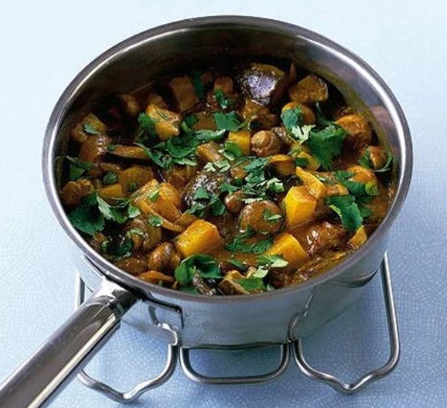

Main
Mushroom & potato curry

Ingredients
- 1 tbsp oil
- 1 onion
- chopped coriander
- 1 large potato
- 2-4 tbsp curry paste
- 1 aubergine
- 250g button mushrooms
- 150ml vegetable stock
- 400ml can reduced-fat coconut milk
Method
- Heat the oil in a large saucepan, add the onion and potato. Cover, then cook over a low heat for 5 mins until the potatoes start to soften. Throw in the aubergine and mushrooms, then cook for a few more mins.
- Stir in the curry paste, pour over the stock and coconut milk. Bring to the boil, then simmer for 10 mins or until the potato is tender. Stir through the coriander and serve with rice or naan bread.